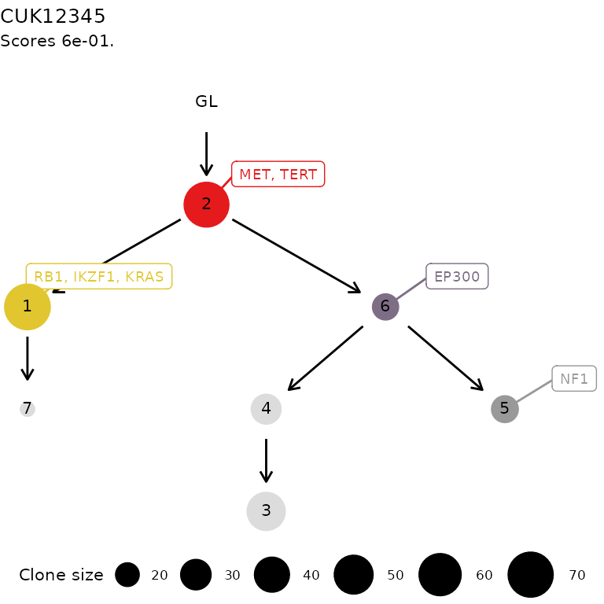
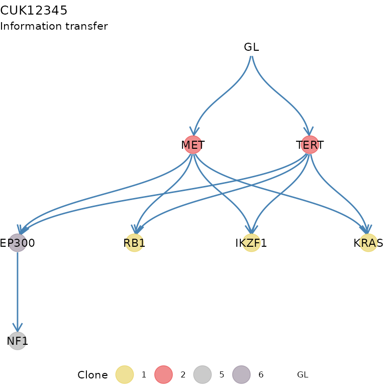
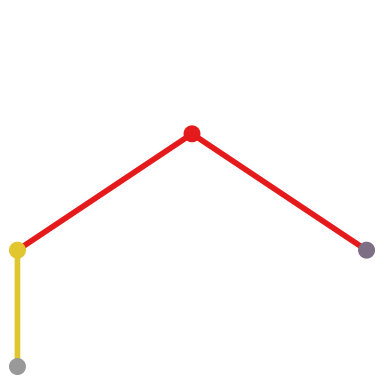
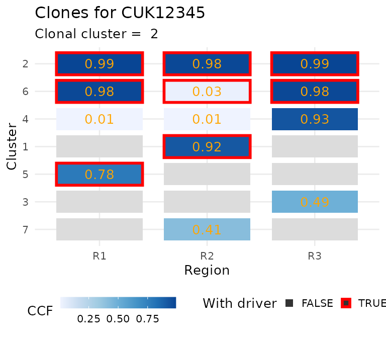
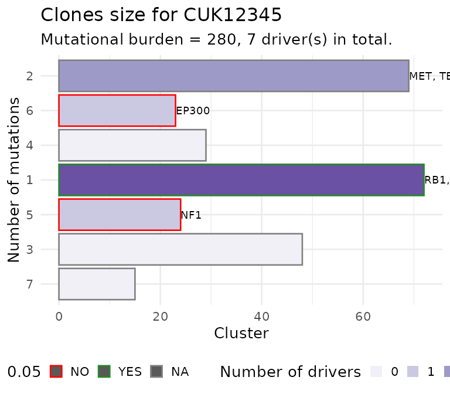

ctree
ctree.Rmd
# To render in colour this vignette
old.hooks <- fansi::set_knit_hooks(knitr::knit_hooks)The ctree is a package to implement basic functions to
create, manipulate and visualize clone trees. A clone tree is a tree
built from the results of a subclonal deconvolution analysis of bulk DNA
sequencing data. The trees created with ctree are used
inside REVOLVER, a
package that implements one algorithm to determine repeated cancer
evolution from multi-region sequencing data of human cancers.
To build a clone tree you need some basic datal; an example dataset
is attached to the package and can be used to create a
ctree S3 object.
data('ctree_input')Required data
Cancer Cell Fractions
Cancer Cell Fractions (CCF) clusters obtained from subclonal deconvolution analysis of bulk DNA sequencing data are required,
ctree_input$CCF_clusters#> # A tibble: 7 × 7
#> cluster nMuts is.driver is.clonal R1 R2 R3
#> <chr> <int> <lgl> <lgl> <dbl> <dbl> <dbl>
#> 1 1 72 TRUE FALSE 0 0.92 0
#> 2 2 69 TRUE TRUE 0.99 0.98 0.99
#> 3 3 48 FALSE FALSE 0 0 0.49
#> 4 4 29 FALSE FALSE 0.01 0.01 0.93
#> 5 5 24 TRUE FALSE 0.78 0 0
#> 6 6 23 TRUE FALSE 0.98 0.03 0.98
#> 7 7 15 FALSE FALSE 0 0.41 0If you need tools to compute CCF values, the evoverse collection of packages for Cancer Evolution analysis contains both MOBSTER and VIBER. Otherwise, a number of other packages can be used (pyClone, sciClone, DPClust, etc.).
Driver events mapped to the CCF clusters, with reported clonality
status, a variantID and a patientID.
ctree_input$drivers#> # A tibble: 7 × 8
#> patientID variantID is.driver is.clonal cluster R1 R2 R3
#> <chr> <chr> <lgl> <lgl> <chr> <dbl> <dbl> <dbl>
#> 1 CRUK0002 RB1 TRUE FALSE 1 0 0.92 0
#> 2 CRUK0002 IKZF1 TRUE FALSE 1 0 0.92 0
#> 3 CRUK0002 KRAS TRUE FALSE 1 0 0.93 0
#> 4 CRUK0002 MET TRUE TRUE 2 0.99 0.98 0.99
#> 5 CRUK0002 TERT TRUE TRUE 2 0.99 0.98 0.99
#> 6 CRUK0002 NF1 TRUE FALSE 5 0.78 0 0
#> 7 CRUK0002 EP300 TRUE FALSE 6 0.96 0.03 0.98Other data
ctree_input$samples
#> [1] "R1" "R2" "R3"
ctree_input$patient
#> [1] "CUK12345"Creation of a clone tree
Sampling trees with ctrees
The easiest way to obtain one or more clone trees that are compatible
with the input CCF clusters is to use the ctrees sampler,
which explores the space of trees compatible with the data and ranks
them by a score that penalises violations of the pigeonhole principle
(see ?ctrees).
trees = ctrees(
CCF_clusters = ctree_input$CCF_clusters,
drivers = ctree_input$drivers,
samples = ctree_input$samples,
patient = ctree_input$patient,
sspace.cutoff = ctree_input$sspace.cutoff,
n.sampling = ctree_input$n.sampling,
store.max = ctree_input$store.max
)#> [ ctree ~ clone trees generator for CUK12345 ]
#>
#> # A tibble: 7 × 7
#> cluster nMuts is.driver is.clonal R1 R2 R3
#> <chr> <int> <lgl> <lgl> <dbl> <dbl> <dbl>
#> 1 1 72 TRUE FALSE 0 0.92 0
#> 2 2 69 TRUE TRUE 0.99 0.98 0.99
#> 3 3 48 FALSE FALSE 0 0 0.49
#> 4 4 29 FALSE FALSE 0.01 0.01 0.93
#> 5 5 24 TRUE FALSE 0.78 0 0
#> 6 6 23 TRUE FALSE 0.98 0.03 0.98
#> 7 7 15 FALSE FALSE 0 0.41 0#> ✔ Trees per region 1, 3, 1
#> ℹ Total 3 tree structures - search is exahustive
#>
#> ── Ranking trees
#> ✔ 3 trees with non-zero score, storing 3The sampler’s behaviour is controlled by three parameters:
-
sspace.cutoff: if the number of tree structures compatible with the data is smaller than this cutoff, every structure is examined exhaustively. Otherwise a Monte Carlo sampler is used. -
n.sampling: when the Monte Carlo sampler is used, this many distinct trees are sampled and scored. -
store.max: the maximum number of ranked trees that are returned to the user.
ctrees always returns a list of objects of
class ctree, ordered by decreasing score (the best tree
first).
length(trees)
#> [1] 3
sapply(trees, function(x) x$score)
#> 1 2 3
#> 0.60000000 0.06666667 0.06666667We work with the top-ranking model.
x = trees[[1]]The structure of a ctree object
A ctree object is a named list that fully describes one
clone tree fit to the input data.
names(x)
#> [1] "adj_mat" "tb_adj_mat" "score" "patient" "samples"
#> [6] "drivers" "CCF" "transfer" "annotation" "tree_type"The main fields are:
-
adj_mat: the adjacency matrix of the tree, including a specialGL(germline) node that is always the root of the tree;
x$adj_mat
#> 2 1 6 4 GL 7 5 3
#> 2 0 1 1 0 0 0 0 0
#> 1 0 0 0 0 0 1 0 0
#> 6 0 0 0 1 0 0 1 0
#> 4 0 0 0 0 0 0 0 1
#> GL 1 0 0 0 0 0 0 0
#> 7 0 0 0 0 0 0 0 0
#> 5 0 0 0 0 0 0 0 0
#> 3 0 0 0 0 0 0 0 0-
tb_adj_mat: the same tree represented as atidygraph/tbl_graphobject, annotated with the CCF, sample attachment and driver information for each node – this is what the plotting functions use;
x$tb_adj_mat#> # A tbl_graph: 8 nodes and 7 edges
#> #
#> # A rooted tree
#> #
#> # Node Data: 8 × 9 (active)
#> cluster nMuts is.driver is.clonal R1 R2 R3 attachment driver
#> <chr> <int> <lgl> <lgl> <dbl> <dbl> <dbl> <chr> <chr>
#> 1 2 69 TRUE TRUE 0.99 0.98 0.99 NA MET, TERT
#> 2 1 72 TRUE FALSE 0 0.92 0 NA RB1, IKZF1, KR…
#> 3 6 23 TRUE FALSE 0.98 0.03 0.98 NA EP300
#> 4 4 29 FALSE FALSE 0.01 0.01 0.93 NA NA
#> 5 GL NA NA NA NA NA NA NA NA
#> 6 7 15 FALSE FALSE 0 0.41 0 NA NA
#> 7 5 24 TRUE FALSE 0.78 0 0 NA NF1
#> 8 3 48 FALSE FALSE 0 0 0.49 NA NA
#> #
#> # Edge Data: 7 × 2
#> from to
#> <int> <int>
#> 1 1 2
#> 2 1 3
#> 3 2 6
#> # ℹ 4 more rows-
transfer: the information transfer of the tree, i.e. the set of trajectories among driver events implied by the tree topology (see the REVOLVER paper for details);
x$transfer$drivers#> # A tibble: 11 × 2
#> from to
#> <chr> <chr>
#> 1 MET RB1
#> 2 MET IKZF1
#> 3 MET KRAS
#> 4 TERT RB1
#> 5 TERT IKZF1
#> 6 TERT KRAS
#> 7 GL MET
#> 8 GL TERT
#> 9 EP300 NF1
#> 10 MET EP300
#> 11 TERT EP300-
score: the score assigned to this tree by the sampler;
x$score
#> [1] 0.6-
annotation: a free-text annotation for the tree, used for instance as a title by some plotting functions.
x$annotation
#> [1] "ctree rank 1/3 for CUK12345"Manual construction of a clone tree
If you already know the tree structure that you want to use – for
instance because it was determined by another tool, or because you want
to test a specific hypothesis – you can build a ctree
object directly with ctree, passing the adjacency matrix
M that you want to use (see ?ctree).
Here we reuse the adjacency matrix of the tree sampled above, after
removing the GL node that ctree adds
automatically.
M = x$adj_mat
M = M[rownames(M) != 'GL', colnames(M) != 'GL']
print(M)
#> 2 1 6 4 7 5 3
#> 2 0 1 1 0 0 0 0
#> 1 0 0 0 0 1 0 0
#> 6 0 0 0 1 0 1 0
#> 4 0 0 0 0 0 0 1
#> 7 0 0 0 0 0 0 0
#> 5 0 0 0 0 0 0 0
#> 3 0 0 0 0 0 0 0
y = ctree(
CCF_clusters = ctree_input$CCF_clusters,
drivers = ctree_input$drivers,
samples = ctree_input$samples,
patient = ctree_input$patient,
M = M,
score = 1,
annotation = "A manually constructed clone tree"
)
print(y)#> [ ctree - A manually constructed clone tree ]
#>
#> # A tibble: 7 × 7
#> cluster nMuts is.driver is.clonal R1 R2 R3
#> <chr> <int> <lgl> <lgl> <dbl> <dbl> <dbl>
#> 1 1 72 TRUE FALSE 0 0.92 0
#> 2 2 69 TRUE TRUE 0.99 0.98 0.99
#> 3 3 48 FALSE FALSE 0 0 0.49
#> 4 4 29 FALSE FALSE 0.01 0.01 0.93
#> 5 5 24 TRUE FALSE 0.78 0 0
#> 6 6 23 TRUE FALSE 0.98 0.03 0.98
#> 7 7 15 FALSE FALSE 0 0.41 0
#>
#> Tree shape (drivers annotated)
#>
#> \-GL
#> \-2 :: MET, TERT
#> |-1 :: RB1, IKZF1, KRAS
#> | \-7
#> \-6 :: EP300
#> |-4
#> | \-3
#> \-5 :: NF1
#>
#> Information transfer
#>
#> MET ---> RB1
#> MET ---> IKZF1
#> MET ---> KRAS
#> TERT ---> RB1
#> TERT ---> IKZF1
#> TERT ---> KRAS
#> GL ---> MET
#> GL ---> TERT
#> EP300 ---> NF1
#> MET ---> EP300
#> TERT ---> EP300
#>
#> Tree score 1
#> Visualisations
S3 functions for printing, and summarizing the object.
print(x)#> [ ctree - ctree rank 1/3 for CUK12345 ]
#>
#> # A tibble: 7 × 7
#> cluster nMuts is.driver is.clonal R1 R2 R3
#> <chr> <int> <lgl> <lgl> <dbl> <dbl> <dbl>
#> 1 1 72 TRUE FALSE 0 0.92 0
#> 2 2 69 TRUE TRUE 0.99 0.98 0.99
#> 3 3 48 FALSE FALSE 0 0 0.49
#> 4 4 29 FALSE FALSE 0.01 0.01 0.93
#> 5 5 24 TRUE FALSE 0.78 0 0
#> 6 6 23 TRUE FALSE 0.98 0.03 0.98
#> 7 7 15 FALSE FALSE 0 0.41 0
#>
#> Tree shape (drivers annotated)
#>
#> \-GL
#> \-2 :: MET, TERT
#> |-1 :: RB1, IKZF1, KRAS
#> | \-7
#> \-6 :: EP300
#> |-4
#> | \-3
#> \-5 :: NF1
#>
#> Information transfer
#>
#> MET ---> RB1
#> MET ---> IKZF1
#> MET ---> KRAS
#> TERT ---> RB1
#> TERT ---> IKZF1
#> TERT ---> KRAS
#> GL ---> MET
#> GL ---> TERT
#> EP300 ---> NF1
#> MET ---> EP300
#> TERT ---> EP300
#>
#> Tree score 0.6
#>
summary(x)#> [ ctree - ctree rank 1/3 for CUK12345 ]
#>
#> # A tibble: 7 × 7
#> cluster nMuts is.driver is.clonal R1 R2 R3
#> <chr> <int> <lgl> <lgl> <dbl> <dbl> <dbl>
#> 1 1 72 TRUE FALSE 0 0.92 0
#> 2 2 69 TRUE TRUE 0.99 0.98 0.99
#> 3 3 48 FALSE FALSE 0 0 0.49
#> 4 4 29 FALSE FALSE 0.01 0.01 0.93
#> 5 5 24 TRUE FALSE 0.78 0 0
#> 6 6 23 TRUE FALSE 0.98 0.03 0.98
#> 7 7 15 FALSE FALSE 0 0.41 0
#>
#> Tree shape (drivers annotated)
#>
#> \-GL
#> \-2 :: MET, TERT
#> |-1 :: RB1, IKZF1, KRAS
#> | \-7
#> \-6 :: EP300
#> |-4
#> | \-3
#> \-5 :: NF1
#>
#> Information transfer
#>
#> MET ---> RB1
#> MET ---> IKZF1
#> MET ---> KRAS
#> TERT ---> RB1
#> TERT ---> IKZF1
#> TERT ---> KRAS
#> GL ---> MET
#> GL ---> TERT
#> EP300 ---> NF1
#> MET ---> EP300
#> TERT ---> EP300
#>
#> Tree score 0.6
#>
#> CCF clusters:
#>
#> # A tibble: 7 × 7
#> cluster nMuts is.driver is.clonal R1 R2 R3
#> <chr> <int> <lgl> <lgl> <dbl> <dbl> <dbl>
#> 1 1 72 TRUE FALSE 0 0.92 0
#> 2 2 69 TRUE TRUE 0.99 0.98 0.99
#> 3 3 48 FALSE FALSE 0 0 0.49
#> 4 4 29 FALSE FALSE 0.01 0.01 0.93
#> 5 5 24 TRUE FALSE 0.78 0 0
#> 6 6 23 TRUE FALSE 0.98 0.03 0.98
#> 7 7 15 FALSE FALSE 0 0.41 0
#>
#> Drivers:
#>
#> # A tibble: 7 × 8
#> patientID variantID is.driver is.clonal cluster R1 R2 R3
#> <chr> <chr> <lgl> <lgl> <chr> <dbl> <dbl> <dbl>
#> 1 CRUK0002 RB1 TRUE FALSE 1 0 0.92 0
#> 2 CRUK0002 IKZF1 TRUE FALSE 1 0 0.92 0
#> 3 CRUK0002 KRAS TRUE FALSE 1 0 0.93 0
#> 4 CRUK0002 MET TRUE TRUE 2 0.99 0.98 0.99
#> 5 CRUK0002 TERT TRUE TRUE 2 0.99 0.98 0.99
#> 6 CRUK0002 NF1 TRUE FALSE 5 0.78 0 0
#> 7 CRUK0002 EP300 TRUE FALSE 6 0.96 0.03 0.98
#>
#> Pigeonhole principle: 12 0
#>
#> R1 R2 R3
#> 1 TRUE TRUE TRUE
#> 2 TRUE TRUE TRUE
#> 4 TRUE TRUE TRUE
#> 6 TRUE TRUE TRUE
#>
#> Goodness-of-fit: 1
#>
#> Then some plotting functions for the tree. A tree layout is used to display the clone tree and the information transfer, which corresponds to the ordering of the drivers annnotated in the tree. This terminology is borrowed from the REVOLVER algorithm, where it is used to refer to the set of trajectories that a patient “transfers” to another patient during the fit.
plot(x)

plot_icon(x)
For the data, you can plot the CCF of the clusters.
plot_CCF_clusters(x)
#> Warning: Removed 8 rows containing missing values or values outside the scale range
#> (`geom_text()`).
Or you can plot the size of each CCF cluster as a barplot. This
barplot is annotated to report wether a subclone with a driver is
significantly larger than the expected size for a subclone without
driver. To carry out this test subclones without drivers are used to
estimate the parameters of a univariate Gaussian distribution (mean and
standard deviation), the p-value is then computed from the fit
distribution through the pnorm function. The confidence
level for the test can be passed as parameter.
plot_clone_size(x)
#> Warning: Removed 3 rows containing missing values or values outside the scale range
#> (`geom_text()`).
The monoclonal case
If a patient has just one CCF cluster, the tree is trivially a single
node attached to the GL root; ctree and
ctrees handle this special case automatically, regardless
of the adjacency matrix that is provided.
monoclonal_CCF = ctree_input$CCF_clusters[ctree_input$CCF_clusters$cluster == "2", ]
monoclonal_drivers = ctree_input$drivers[ctree_input$drivers$cluster == "2", ]
monoclonal_CCF#> # A tibble: 1 × 7
#> cluster nMuts is.driver is.clonal R1 R2 R3
#> <chr> <int> <lgl> <lgl> <dbl> <dbl> <dbl>
#> 1 2 69 TRUE TRUE 0.99 0.98 0.99
monoclonal_drivers#> # A tibble: 2 × 8
#> patientID variantID is.driver is.clonal cluster R1 R2 R3
#> <chr> <chr> <lgl> <lgl> <chr> <dbl> <dbl> <dbl>
#> 1 CRUK0002 MET TRUE TRUE 2 0.99 0.98 0.99
#> 2 CRUK0002 TERT TRUE TRUE 2 0.99 0.98 0.99
mono = ctrees(
CCF_clusters = monoclonal_CCF,
drivers = monoclonal_drivers,
samples = ctree_input$samples,
patient = "monoclonal-patient",
sspace.cutoff = ctree_input$sspace.cutoff,
n.sampling = ctree_input$n.sampling,
store.max = ctree_input$store.max
)#> [ ctree ~ clone trees generator for monoclonal-patient ]
#>
#> # A tibble: 1 × 7
#> cluster nMuts is.driver is.clonal R1 R2 R3
#> <chr> <int> <lgl> <lgl> <dbl> <dbl> <dbl>
#> 1 2 69 TRUE TRUE 0.99 0.98 0.99#> ! Model with 1 node, trivial trees returned
#> ✔ 1 trees with non-zero score, storing 1
#>
#> This tree has 1 node, creating a monoclonal model disregarding the input matrix.
print(mono[[1]])#> [ ctree - ctree rank 1/1 for monoclonal-patient ]
#>
#> # A tibble: 1 × 7
#> cluster nMuts is.driver is.clonal R1 R2 R3
#> <chr> <int> <lgl> <lgl> <dbl> <dbl> <dbl>
#> 1 2 69 TRUE TRUE 0.99 0.98 0.99
#>
#> Tree shape (drivers annotated)
#>
#> \-GL
#> \-2 [R1, R2, R3] :: MET, TERT
#>
#> Information transfer
#>
#> GL ---> MET
#> GL ---> TERT
#>
#> Tree score 1
#>